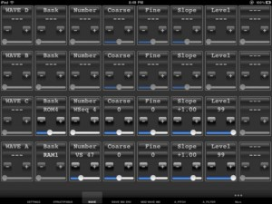

Leveraging 2 years of experience in designing GUI for control surface and 25+ years of experience in designing synthesizers sounds, we are bringing the best of those experiences to the iPad with iControlMIDI for Korg M1 / M1R / EX M1 / EX M1R, namely iM1R.
NOTE: PCM Card waves are not managed, Memory Mode is 100 Programs / 100 Combinations.
iControlMIDI is a UI Friendly and Workflow Efficient Solution that let you control your MIDI machines and software, simply from your iPad.
iControlMIDI is Plug & Play.
Whether you are in a computer-less workflow using a wired connection or you are in a computer workflow using a wired or wireless connection, iControlMIDI is a Plug & Play solution.
In a wireless connection, iControlMIDI uses your:
• iPad with WiFi connectivity
• WiFi router (like an AirPort)
• [MAC] MacOS / Utilities / AudioMIDISetup / Network (MIDI Network Sessions)
• [PC] rtpMIDI and Apple Bonjour
In a wired connection, iControlMIDI uses your:
• iPad
• iPad CoreMIDI compliant MIDI OUT interface (check our website FAQ Page for iControlMIDI qualified ones)
• MIDI IN physical port on your synth or on your computer MIDI interface or on your MIDI Patch Bay
iControlMIDI let you control the following MIDI controllable parameters (all PROGRAM parameters including OSC Mode Single, Double and Drums and FX1 / FX2; not the COMBINATION parameters).
Parameter Name and Value displayed on iControlMIDI UI are the same as the ones displayed on your synth if you were to program it from its control panel!
iControlMIDI offers 4-Controls per Parameter:
• Slider: full range parameter value adjustment for a ‘coarse’ workflow
• + button: precise +1 parameter value adjustment for a ‘fine’ workflow
• – button: precise -1 parameter value adjustment for a ‘fine’ workflow
• Parameter default value button: default parameter value for a faster workflow
iControlMIDI is a Workflow Efficient Solution as it offers UI Consistent Synth Functions, for example, the VCF functions are grouped on the same iControlMIDI Page.
iControlMIDI integrates with your DAW. Real-time parameters adjustments triggered on iControlMIDI can be recorded and playback on your DAW if your DAW supports MIDI Sysex (ex: Ableton Live does NOT support MIDI Sysex).
[WIRELESS] Zero [Mac] and Low [PC] Dependencies Solution
iControlMIDI relies on iOS 4.2 CoreMIDI and MacOS CoreMIDI frameworks is 100% MIDI, 100% iOS and 100% MacOS compatible and:
• Does not require to pay for additional software or have additional software installed on your Mac; requires to download rtpMIDI and Apple Bonjour on your PC
• Does not require to pay for additional hardware
• Does not require to do message mapping
• Does not require to design a UI on your Mac or PC and upload/sync it on your iPad
• Does not require to design a UI on your iPad
[WIRED] Low [Mac] and [PC] Dependencies Solution
iControlMIDI relies on iOS 4.3 CoreMIDI and MacOS CoreMIDI frameworks is 100% MIDI, 100% iOS and 100% MacOS compatible and:
• Does not require to pay for additional software or have additional software installed on your Mac or PC
• Does require an iPad CoreMIDI compliant MIDI OUT interface (check our website FAQ Page for iControlMIDI qualified ones)
• Does require a free MIDI IN physical port available on your synth or on your computer MIDI interface or on your MIDI Patch Bay
• Does not require to do message mapping
• Does not require to design a UI on your Mac or PC and upload/sync it on your iPad
• Does not require to design a UI on your iPad
With iControlMIDI, we are offering you to be immediately operational, so you can focus on your music (not on the IT/MIDI part of it!) and unleash your creativity.
iControlMIDI is designed by Electronic Musicians for Electronic Musicians.